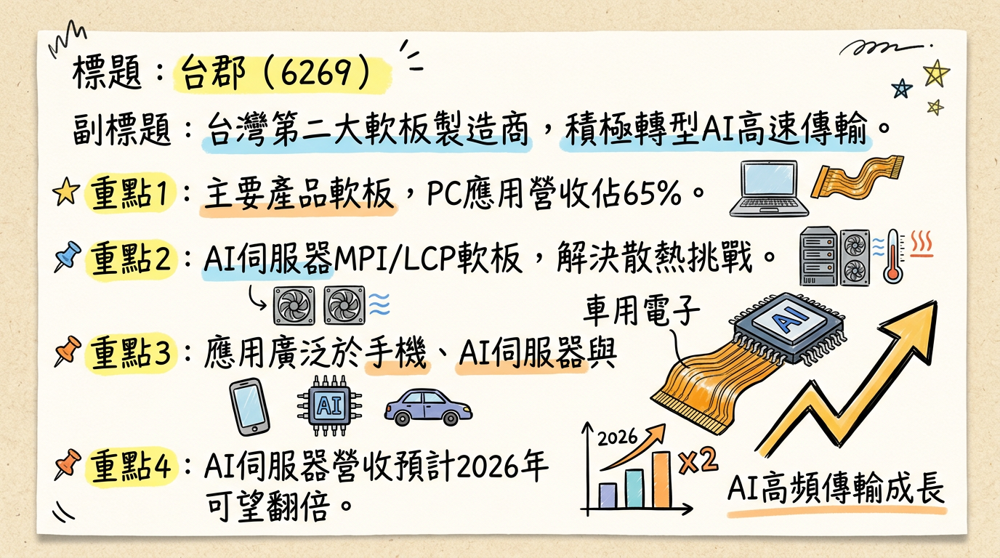
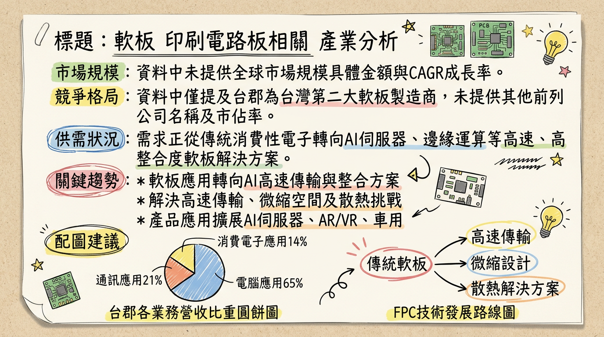
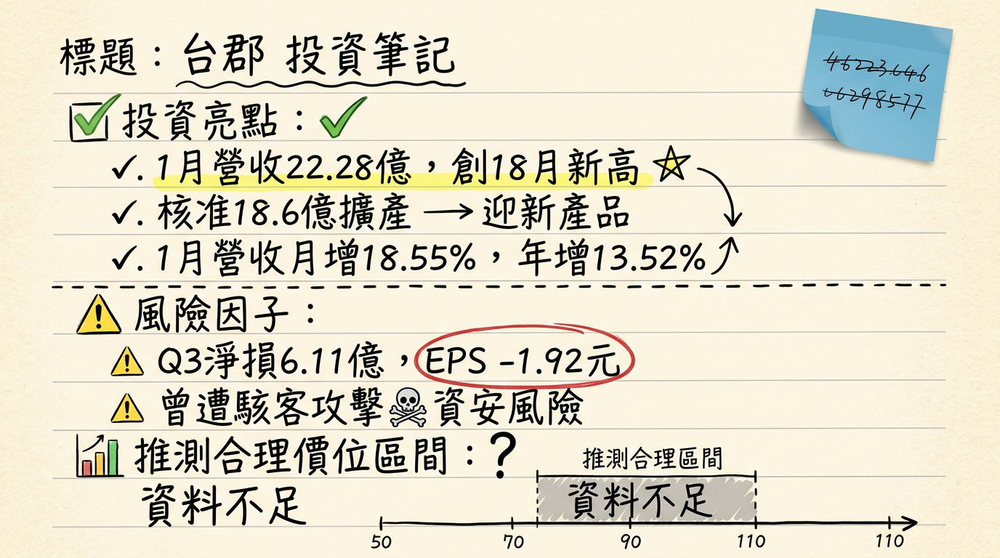

6269 台郡 深度研究報告
一句話摘要
台郡（6269）正積極從傳統消費性電子軟板製造商轉型為AI高速傳輸解決方案領航者，儘管2025年面臨轉型陣痛與獲利低谷，但憑藉MetaLink技術、AI伺服器高階軟板的成功佈局及客戶新產品產能建置，預期2026年營運將迎來強勁復甦，AI業務可望翻倍成長，有望重返2021-2022年獲利水準。
公司概覽
台郡是台灣第二大軟板（FPC）製造商，主要生產軟性單層板、雙層板、多層板及軟硬結合板，並提供軟板模組（FPCA）與電子訊號傳輸解決方案。公司願景定位為「電子訊號傳輸解決方案」的領航者，積極佈局AI高速傳輸領域，核心解決方案包括為AI伺服器開發的MPI (Micro Pitch Interconnect) 與LCP (Liquid Crystal Polymer) 軟板整合方案，以應對空間微縮與散熱挑戰。此外，公司將導入自主創新的MetaLink技術，聚焦於AI伺服器高速傳輸、AI邊緣運算裝置及智慧行動裝置等產品開發。產品應用涵蓋手機、筆電、平板、穿戴式裝置、消費性電子、AI伺服器、AR/VR、智慧眼鏡、光通訊及車用電子等。製造基地分佈於台灣高雄（和發廠負責電鍍、設計、鑽孔）和中國昆山（負責組裝、檢測）。
營收結構概覽 (2025年第一季)
| 應用領域 | 佔營收比例 |
|---|
| PC應用 | 65% |
| 通訊應用 | 21% |
| 消費電子 | 14% |
| 合計 | 100% |
核心競爭優勢
AI高速傳輸技術領先： 台郡積極投入AI伺服器高階軟板領域，成功開發MPI與LCP軟板整合方案，並將導入自主創新的MetaLink技術。這些技術旨在解決AI伺服器在高頻高速傳輸、空間壓縮和散熱方面的嚴苛挑戰，使其在AI訊號傳輸領域具備獨特優勢。
高階軟板製程能力： 公司已具備10～20層高階軟板製程能力，並推動以高速軟板取代20～100公分傳統短距纜線，應用於機櫃內GPU／CPU模組的高速傳輸，提升產品附加價值和技術門檻。
成功切入指標客戶供應鏈： 已切入輝達（NVIDIA）AI伺服器液冷系統的感測器供應鏈，並獲得AI客戶採用出貨，顯示其高階產品的市場認可度與技術實力。
產品組合轉型與分散風險： 透過佈局AI伺服器、AI邊緣運算、AR/VR、智慧眼鏡、光通訊及車用電子等新興高成長領域，逐步降低對傳統消費性電子市場的依賴，優化產品組合並分散營運風險。
財務分析
月營收趨勢
| 月份 | 金額 (新台幣億元) | 月增率 MoM | 年增率 YoY |
|---|
| 2026年1月 | 22.28 | +18.55% | +13.52% |
| 2025年12月 | 18.79 | +1.03% | -3.34% |
| 2025年11月 | 18.60 | +0.75% | -1.89% |
| 2025年10月 | 18.46 | -14.41% | +0.71% |
| 2025年9月 | 21.57 | +9.46% | +9.20% |
| 2025年8月 | 19.71 | +0.19% | -6.57% |
季度數據
2025年第三季財報：
- 季營收：新台幣60.95億元
- 營業毛利率：1.3%
- 營業淨損率：-13.8%
- 單季每股稅後虧損 (EPS)：新台幣-1.92元
年度趨勢
| 年度 | 全年度營收 (新台幣億元) | 每股稅後盈餘 (EPS) |
|---|
| 2024年 (實際) | 264.43782 | -2.56 元 |
| 2025年 (預估) | 242.4484 (中位數) | -3.04 元 (中位數) |
法說會重點 (2025年11月6日及相關資訊)
- 最新法說會日期： 台郡受邀參加凱基證券舉辦的法人說明會，說明2025年第四季營運成果，日期為2026年3月10日下午4點。
- 2025年第三季營運回顧： 單季每股虧損新台幣1.92元，累計前三季每股淨損為新台幣5.09元。
- 管理層對各產品線說明：
*
2025年第四季： 產能出貨預估與第三季約略相當，其中AI伺服器可望有雙位數成長。
* 手機業務： 2025年下半年手機業務量較2024年同期顯著提升，若以規格片數來看約估計從2-4片，至2026年再翻倍拉升2-3片（此處指片數增加，非倍數）。手機軟板從4層板升級至6層板，帶動單價與技術門檻提升。
* AI伺服器： 台郡的解決方案已獲得AI客戶採用出貨，預期AI伺服器營收占比2025年為高個位數百分比，2026年至少可翻倍成長。
* 技術能力： 已具備10～20層高階軟板製程能力，並正推動以高速軟板取代20～100公分傳統短距纜線，應用於機櫃內GPU／CPU模組的高速傳輸。
* MetaLink技術： 已導入極低損耗（Extreme Low Loss）材料，並搭配獨有技術的MetaLink製程以對應高速信號傳輸。相關模組已與連接器廠合作，將透過自有SMT產線出貨。MetaLink製程亦將是未來數年資本支出主軸，目標銜接2026年新平台導入節奏。
- 資本支出金額： 董事會於2026年2月9日核准新增資本支出預算案，投資金額達新台幣18.6億元，主要為配合客戶新產品的產能建置需求。
- 管理層對下季/下半年 guidance：
* 預期2025年營運仍處轉型低谷，但2026年營運將蓄勢待發，轉型成為訊號傳輸解決方案提供商，導入自主創新的MetaLink技術，聚焦AI伺服器高速傳輸、AI邊緣運算裝置與智慧行動裝置等解決方案的產品開發。
* 公司表示2025年力求轉虧為盈，並預期2026年營運將完全恢復2021-2022年表現。
* 非手機產品方面，2025年AI伺服器高速運算、AR/VR、智慧眼鏡等新產品均可望較2024年倍數成長，且2026年亦可望倍數年成長。
券商觀點
券商目標價
| 券商名稱 | 目標價 (新台幣) | 評等 | 日期 |
|---|
| 元富證券投顧 | 80 | 買進 | 2025/11/11 |
| 國票證券投顧 | 80 | 買進 | 2025/11/07 |
| FactSet調查 | 67 | 中立 | 2025/08/31 |
2025-2026年EPS預估
* 2025年EPS預估：中位數-3.04元 (最高0.02元，最低-7.36元)。
* 2026年EPS預估：中位數2.23元 (最高6.8元，最低-1.43元)。
* 2025年EPS預估：-5.87元。
- 綜合評級方面： FactSet於2025年8月31日顯示，6位分析師中，2位給予積極樂觀、5位保持中立、0位保守悲觀。
財報深度分析
利潤率趨勢 (2024Q1-2025Q3)
| 季度 | 營收 (新台幣億元) | 毛利率 | 營業利益率 | 稅後淨利率 | EPS (新台幣) |
|---|
| 225Q3 | 60.95 | 1.3% | -13.8% | -10.0% | -1.92 |
| 225Q1 | N/A | 0.5% | N/A | N/A | -1.76 |
| 2024Q4 | 87.16 | 19.3% | 6.9% | 8.3% | 2.15 |
| 2024Q3 | N/A | 22.8% | 10.3% | 11.2% | 2.76 |
| 2024Q2 | N/A | 16.5% | 3.0% | 3.4% | 0.81 |
| 2024Q1 | N/A | 15.6% | 2.1% | 2.5% | 0.61 |
2024年台郡的利潤率呈現逐季增長的趨勢，從第一季的低點逐漸回升，第四季達到年度高峰，顯示營運狀況有所改善，主要受惠於高階應用產品出貨比重提升，帶動產品組合優化。然而，進入2025年，由於公司處於轉型陣痛期，毛利率大幅下滑至1.3% (2025Q3)，導致連續虧損。公司積極導入AI應用相關新技術與高頻高速材料，並持續與客戶開發新產品，預期這些高附加價值的產品將在2026年帶來毛利率的顯著回升（預估2026年毛利率可望回升至18%）。
存貨分析
目前未找到2024-2026年台郡近4季存貨金額、存貨週轉天數及應收帳款週轉天數的具體最新資料，也無異常堆積或備料現象的資訊。
資本支出
- 2023年： 約新台幣30億元。
- 2024年： 預計新台幣45億元。
- 2025年： 和發新廠預計下半年投產，將擴大高階產品佈局，聚焦AI相關應用，導入高速高頻傳輸技術與材料，搶佔未來軟板市場商機。
- 2026年： 董事會核准新增資本支出預算案，投資金額達新台幣18.6億元，主要為配合客戶新產品的產能建置需求。
- 折舊攤銷趨勢： 未找到2024-2026年關於台郡折舊攤銷的具體最新資料。新增的資本支出在短期內可能增加折舊費用，對獲利產生影響。
股權異動
- 董監事/大股東申報轉讓： 未找到2025-2026年台郡董監事/大股東申報轉讓的最新紀錄。
- 庫藏股買回紀錄： 未找到2024-2026年台郡庫藏股買回紀錄的最新資料。
- 可轉換公司債（CB）： 國內第一次有擔保轉換公司債 (62691) 已於2024年11月30日到期下櫃；國內第二次有擔保轉換公司債 (62692) 已於2024年4月29日到期下櫃。目前未找到2024年以後新發行可轉換公司債的資訊。
- 增減資計畫： 未找到2024-2026年台郡近期現金增資或減資計畫的最新資料。
- 股利政策：
*
2025年度： 由於2024年營運陷入虧損，台郡預計2025年將不配發任何股利。
* 2024年度： 董事會已於2025年3月6日決議通過每股配發現金股利新台幣4.5元 (尚待股東會通過)。
* 2023年度： 配發現金股利新台幣4.5元 (除息日2024年7月26日)。
* 2022年度： 配發現金股利新台幣5元 (除息日2023年7月20日)。
產業分析
市場規模與供需
- 全球FPC市場規模： 預計2025年約落在195億美元至283.6億美元之間，並預計在2026年進一步增長至216.1億美元至310.7億美元，年複合成長率（CAGR）約在5.8%至10.8%之間。
- 供需狀況： FPC產業呈現「強弱分明」。
*
傳統軟板與手機市場： 仍處於相對弱勢，手機市場疲弱導致傳統FPC可能面臨供過於求。
* 高階AI相關PCB/FPC： 針對AI伺服器與高速運算需求，高階PCB產業鏈預計2026年將迎來「缺料大年」，高階產能持續吃緊，處於供不應求狀態，將導致產業供應鏈進行結構性洗牌。
- 產業平均毛利率水準： FPC產業平均毛利率數據難以直接取得2025-2026年整體值。然從相關資料可觀察：銅箔行業因擴產過剩毛利率偏低；BT載板預計2025年下半年毛利率提升至10%-20%以上。台郡自身2025年第一季毛利率為0.5%，第三季為1.4%，而2024年全年毛利率為5.75%。展望2026年，預估台郡毛利率可望回升至18%。
競爭格局
台郡 vs 主要競爭對手比較
| 比較項目 | 台郡（6269） | 主要競爭對手（概括性） |
|---|
| 技術 | 積極投入AI高速傳輸，發展MPI與LCP軟板整合方案，自主MetaLink技術。專注6層以上高層數、高頻高速產品。 | 傳統FPC廠商著重輕薄短小、HDI。高階PCB/FPC市場則強調高頻高速、多層化、異質整合、散熱。 |
| 產能 | 2026年2月核准新增資本支出18.6億元，配合客戶新產品建置，擴大AI相關高階產能。 | 許多PCB廠商加速海外擴產，因應地緣政治及客戶需求。 |
| 客戶 | 美系大客戶（暗示Apple），已獲AI客戶採用出貨，切入NVIDIA AI伺服器液冷系統感測器供應鏈。 | 客戶群廣泛，涵蓋消費性電子、通訊、汽車、工業等，許多大廠亦積極爭取AI相關訂單。 |
| 價格 | 隨著AI應用營收占比提升，其相關產品的平均銷售價格（ASP）與用量可望提升。轉型期間，傳統產品毛利率承壓。 | 高階、高頻高速材料和產品因供不應求，價格有上漲趨勢，而中低階產品面臨價格競爭壓力。 |
台灣同業比較 (以PCB同業欣興參考)
| 公司 | 營收規模 (2025Q1-Q3累計) | 毛利率 (2025Q3) | EPS (2025Q3) | 2026年預估EPS |
|---|
| 台郡 | 167.64億元 | 1.4% | -1.92元 | 2.23元 (FactSet中位數) / 5.55元 (參考) |
| 欣興 | N/A | N/A | N/A | 4.38元 (2025年全年) |
產業趨勢
AI高速運算與資料傳輸：
* 具體影響： AI伺服器與HPC需求快速增長，對FPC傳輸速度、高頻特性、訊號完整性要求大幅提高。這驅動了對高層數、高密度、低損耗材料（如LCP、MPI）及先進設計（如MetaLink）的需求。單機價值量可放大數倍。
小型化、高密度、輕量化與軟硬結合：
* 具體影響： 消費性電子（手機、穿戴、AR/VR、智慧眼鏡）對空間利用要求高，推動FPC朝更薄、更小、更高密度走線，並結合軟硬板技術。折疊裝置亦對彎折可靠性提出更高要求。
車用電子與電動車：
* 具體影響： 電動車和ADAS普及增加車內電子元件使用，FPC因輕量化、耐熱性、高可靠性，在電池管理系統、資訊娛樂系統、安全電子設備應用擴大，預計在電控系統滲透率將突破60%。
對 台郡 而言的具體機會和威脅
*
AI伺服器與高速傳輸： 透過MPI/LCP軟板整合方案及MetaLink技術，成功切入AI伺服器高速傳輸市場，已進入NVIDIA AI伺服器液冷系統感測器供應鏈，預期2026年AI伺服器相關業績將翻倍成長，為主要成長動能。
* 新興應用： 積極布局AI邊緣運算、智慧行動裝置、折疊手機、AR/VR、智慧眼鏡及光通訊等高成長領域，並有車用新開發案啟動，有助於分散風險。
* 轉型效益顯現： 儘管2025年處於轉型低谷，公司預期2026年營運有望恢復2021-2022年表現，毛利率和EPS將顯著改善，甚至轉虧為盈。
*
傳統消費性電子市場疲軟： 儘管積極轉型，傳統手機市場的疲弱仍是營運挑戰。
* 轉型陣痛期與獲利壓力： 公司在2025年仍連續虧損，毛利率偏低，顯示短期營運壓力。
* 高階軟板製程良率： 高階軟板製程的良率爬坡速度，將是影響未來獲利的關鍵變數。
* 總經風險： 全球經濟不確定性、地緣政治、美國關稅政策與匯率波動等，可能影響終端需求和客戶拉貨動能。
相關投資題材的具體連結
- AI (人工智慧)： 台郡定位為「電子訊號傳輸解決方案」領航者，直接受惠於AI伺服器高速傳輸、AI邊緣運算。其MPI、LCP軟板整合方案和MetaLink技術正是為了解決AI伺服器在高頻高速傳輸、空間微縮和散熱方面的挑戰。
- HBM (高頻寬記憶體)： HBM是AI伺服器核心關鍵，儘管台郡不直接生產，但HBM需求帶動的AI產業鏈成長，將間接受益於台郡在AI伺服器高速傳輸FPC領域的進展。
- 電動車 (EV)： 台郡積極布局車用電子領域，FPC因其輕量化、空間優化和可靠性，在電動車的電池管理系統、電控系統及ADAS等應用中扮演關鍵角色，為另一個重要成長市場。
近期催化劑
- 2026年03月10日： 召開法人說明會，說明2025年第四季營運成果，預期將釋出更多2026年營運展望與AI業務進展。
- 2026年02月10日： 董事會核准新增資本支出18.6億元，用於配合客戶新產品的產能建置需求，顯示公司對未來成長動能的信心。
- 2026年02月09日： 公布2026年1月合併營收達新台幣22.28億元，月增18.55%，年增13.52%，創近18個月以來新高，營收表現亮眼。
- 2025年12月11日： 公司資訊系統遭受駭客網路攻擊，初步評估對公司營運無重大影響，風險事件獲得控制。
- 2025年11月07日： 法說會揭示2025年為轉型低谷，但強調2026年營運可望蓄勢待發，轉型訊號傳輸解決方案提供商。
- 2025年05月21日： 市場傳聞台郡已切入輝達（NVIDIA）AI伺服器液冷系統的感測器供應鏈，並於台北國際電腦展間接證實，確立AI業務的關鍵進展。
- 外資/投信近期買賣超：
* 2026年03月05日：三大法人合計賣超99張 (外資賣超60張)。
* 2026年03月04日：三大法人合計賣超1,812張 (外資賣超1,611張)。
* 2026年02月25日：三大法人合計買超159張 (外資買超196張)。
* 2026年02月10日：三大法人合計買超2,030張 (外資買超1,983張)。
* 2026年累計 (截至2026年02月11日)：外資累計買超2,383張。
⭐ 成長動能時間軸
*
AI伺服器高階軟板： 開始小量出貨AI伺服器用高階軟板，並成功切入輝達（NVIDIA）AI伺服器液冷系統的感測器供應鏈，相關產品已獲美系大客戶採用。
* 和發新廠投產： 高雄和發新廠預計下半年投產，導入高速高頻傳輸技術與材料，應用於高頻高速傳輸、AI應用與低軌衛星等領域，為高階產能做準備。
* 手機業務量顯著提升： 配合主力客戶新品推出，手機業務量較2024年同期顯著提升，手機軟板由4層板升級至6層板，帶來單價與技術門檻提升。
*
AI伺服器應用營收翻倍成長： AI伺服器相關應用業績可望翻倍成長，營收占比預計將從2025年的高個位數百分比大幅提升。
* MetaLink技術導入： 導入自主創新的MetaLink技術，聚焦於AI伺服器高速傳輸、AI邊緣運算裝置與智慧行動裝置等解決方案的產品開發。MetaLink製程亦將是未來數年資本支出主軸。
* 手機產品線再升級： 手機規格片數估計將從2025年的2-4片，再翻倍增加至6-7片，進一步推升手機業務ASP及獲利。
* 新產能建置與貢獻： 2026年2月核准新增的18.6億元資本支出將投入客戶新產品的產能建置，確保高階軟板產能充足，鞏固市佔率並優化產品組合。
* 非手機產品倍數成長： AI伺服器高速運算、AR/VR、智慧眼鏡等新產品繼2025年倍數成長後，2026年亦可望倍數年成長。
* 營運目標恢復至2021-2022年水準： 管理層預期2026年營運將完全恢復2021-2022年表現，毛利率及獲利結構持續優化，全年營收有機會年增雙位數。
*
PC應用： 受惠於高階NB、伺服器相關需求成長，PC應用營收占比已由2015年的9%大幅提升至2024年的46%，成為帶動營運成長的新主力。
* 新客戶/新市場： 持續積極切入光通訊、車用電子、智慧穿戴等高成長領域，分散對單一客戶的依賴。
2026 展望
2026年將是台郡營運的重要轉捩點。儘管2025年因轉型處於低谷，面臨連續虧損，但公司對2026年展現高度信心，預期營運將迎來大翻身。
成長動能：
AI伺服器高速傳輸業務放量： AI伺服器營收佔比預計從2025年的高個位數百分比，在2026年至少翻倍成長，成為核心成長引擎。成功切入NVIDIA供應鏈是其重要里程碑。
MetaLink技術貢獻： 導入MetaLink技術將有效解決高頻高速傳輸挑戰，提升產品附加價值和競爭力，預計將在2026年新平台導入後逐步貢獻營收。
高階手機軟板升級： 主力客戶手機軟板從4層板升級至6層板，以及2026年規格片數的倍數增加，將顯著提升手機業務的ASP與毛利。
新產能與產品佈局： 和發新廠2025年下半年投產，加上2026年2月核准的18.6億元資本支出，將確保AI相關高階軟板產能充足，為客戶新產品出貨做好準備。
非手機產品多元成長： AI邊緣運算、AR/VR、智慧眼鏡、光通訊及車用電子等新興應用市場預計將持續倍數成長，為營運提供多元支撐。
風險：
AI需求不如預期： 若AI伺服器市場增速放緩或台郡在供應鏈中的份額不及預期，將影響其核心成長動能。
高階製程良率挑戰： 高階軟板製程技術門檻高，良率爬坡速度將直接影響生產成本與獲利能力。
客戶集中度風險： 儘管積極轉型，若對美系大客戶的依賴度仍高，其拉貨動能將對台郡營運產生較大影響。
折舊費用壓力： 大量資本支出雖然是長期利多，但短期內折舊費用的增加可能持續對獲利構成壓力。
全球總體經濟不確定性： 利率、通膨、地緣政治、匯率波動（如台幣升值）等因素可能影響終端需求和公司獲利表現。
投資結論
AI轉型顯著，2026年營運有望迎來爆發式成長： 台郡已成功從傳統FPC廠轉型至AI高速傳輸解決方案提供商，2025年雖處低谷，但AI伺服器業務預期2026年可望翻倍成長，MetaLink技術將是關鍵推力。管理層預期2026年營運有望恢復至2021-2022年水準，顯示其對轉型成功的信心。
產品組合優化，毛利率及獲利能力將大幅改善： 高階手機軟板升級（4層至6層，片數翻倍）、AI伺服器高附加價值產品放量，將顯著提升產品平均售價（ASP）和毛利率，預期2026年毛利率有望回升至18%，帶動獲利能力由虧轉盈。
資本支出支撐未來成長： 2026年2月核准的18.6億元資本支出用於客戶新產品產能建置，結合和發新廠投產，確保高階產品的量產能力，為未來數年的成長奠定基礎。
NVIDIA供應鏈認證，市場地位確立： 成功切入輝達AI伺服器液冷系統感測器供應鏈，是對台郡技術實力的高度肯定，有助於鞏固其在AI產業鏈中的關鍵地位。
綜合考量成長動能與轉型風險，建議目標價區間為新台幣95-120元： 雖然2025年仍處虧損，但考量台郡在AI領域的強勁成長動能（AI業務翻倍、高階手機板升級、MetaLink導入），若2026年能成功執行管理層的營運恢復目標，EPS有望挑戰新台幣5-6元（FactSet最高預估6.8元），給予2026年預估EPS 18-20倍的本益比，目標價區間為新台幣90-120元。鑑於其轉型成功可能帶來溢價，給予略高於券商現行目標價的區間。
具體目標價區間建議：新台幣95 - 120元。
本報告由 AI 自動產生，資料來源為公開網路資訊，僅供參考，不構成投資建議。產生時間：2026-03-06 00:27
📊 資訊卡


